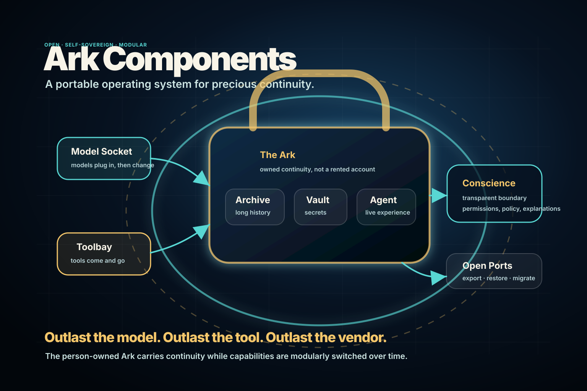
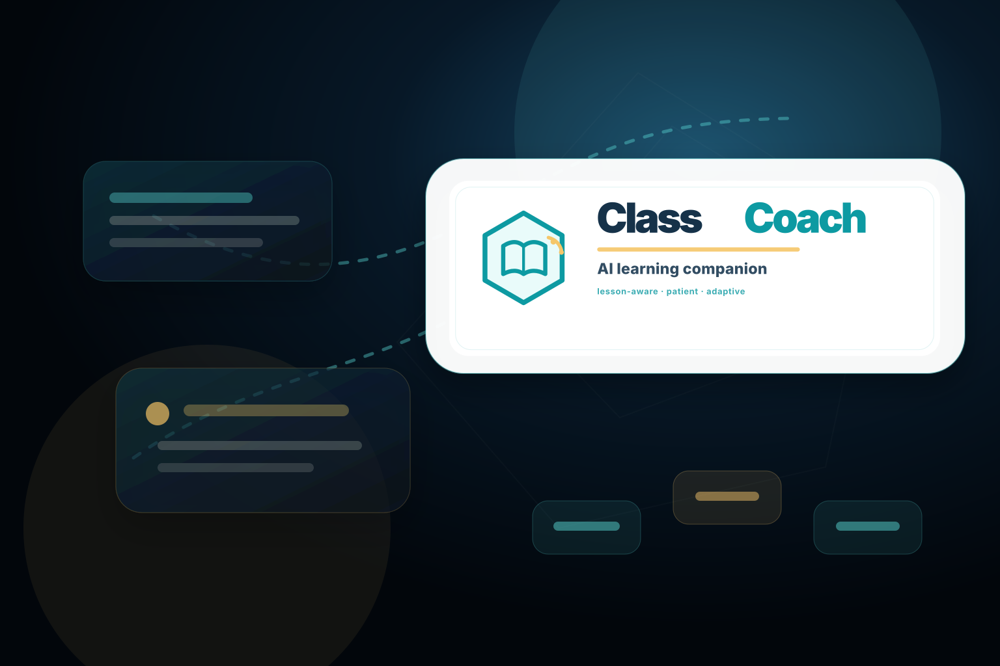
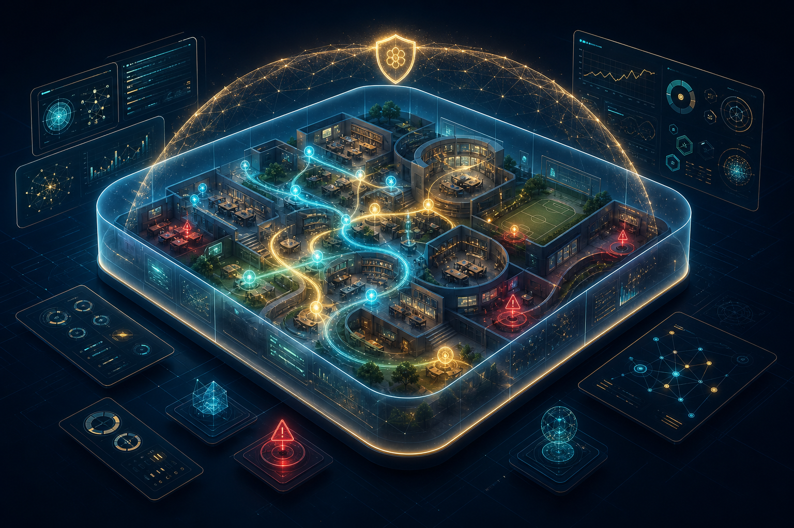
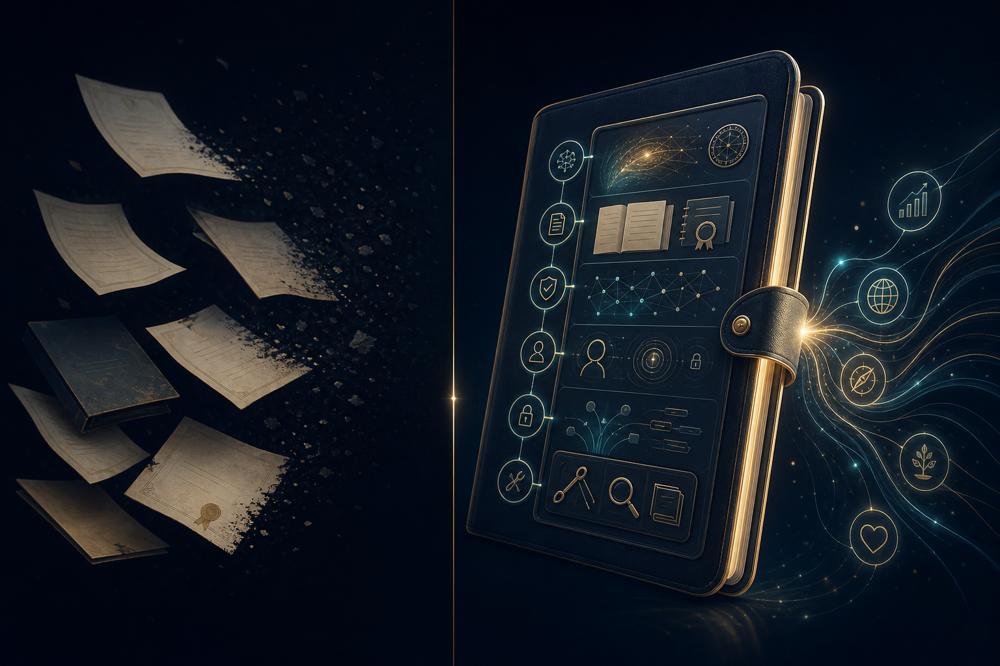

Disconnected, abandoned, outside the Ark.
- Work marooned in school portals, SaaS tools, inboxes and drives.
- Decisions and lessons lose provenance as people move on.
- The application’s server becomes the place where your knowledge is useful.
Portable knowledge Arks
Dreamcatcher gives each person, family, school, or company an owned Ark: a protected portable vessel where work, records, history, values, and distilled wisdom can keep becoming useful.
Private pilots are open. Email, Telegram, WhatsApp, phone, SMS, callback requests, and a downloadable contact card now route to the Dreamcatcher Concierge.

The posture
Most software scatters your life across rented silos. Dreamcatcher starts from the opposite assumption: your working knowledge should have a durable home, guarded by policy, backed up, portable, and able to improve over time.
Servers still move packets, keep backups and stream capability. They do not need to own your work.
Intentional knowledge concentration
A child moving through school, an adult moving through work, a founder moving through customers — each leaves breadcrumbs everywhere. Unintentional sprawl makes that knowledge less valuable and less controlled. An Ark gathers it on purpose.
The owned architecture
The Ark is the owned continuity layer; the Agent is the live experience working inside it.
The Archive carries long-running history; the Vault protects sensitive secrets and high-risk controls.
The active boundary: approvals, policies, redaction, denial, escalation and a conservative safety model.
Models plug into sockets and tools plug into bays, so the Ark can outlast engines, vendors, devices and channels.
Personal software
Personal computers gave us private compute, but most software remained one-size-fits-millions. Dreamcatcher streams tested, purpose-built software into the Ark so the app can change around the person instead of making the person fit the server.
Safety boundary
The Conscience can be transparent for safe operations, ask for approval when consequence is high, redact what should not leave, explain why something was blocked, and escalate when policy is uncertain.
Families, schools and teams
A family can be a team of Arks. Parents can build values, records and lived judgment into their own Arks, grant children safe access, and help school knowledge work with family wisdom without dumping everyone’s private life into one pot.
Parent Arks, child Arks and family history become a governed wisdom stream: inherited, permissioned, age-appropriate and challengeable.
A school-operated Ark can preserve learning history, strengths and feedback without turning childhood into a cloud-owned dossier.
Small private groups can reason with shared history, culture, values and decisions through redacted, auditable interaction among owned Arks.
Why Dreamcatcher
Dreamcatcher is the network beyond the Conscience: redacted problems in, tested solutions out, with provenance and attribution for reusable work. The Ark stays yours; Dreamcatcher keeps it learning at the edge.
Published decks
Dreamcatcher decks start as knowledge seeds, then become public-safe Reveal.js decks with previews, topics and links. Use them like working memos: fast to skim, concrete enough to discuss.

The open architecture of a person-owned Ark: Agent, Conscience, Archive, Vault, Model Socket, Toolbay, Open Ports, app locality, and Outlast continuity.
Open deck
The classroom-facing AI learning companion: private questions, genuine understanding, teacher feedback, and specialist support upgrades.
Open deckChannel parental energy into adult Ark testing, guardian tests, simulation interrogation, resource asks, and proof-point updates.
Open deck
Test synthetic students, dashboards, Conscience controls, costs and graduation-grade portable Arks before real release.
Open deckThe short front door: concentrate the Ark, put parents in the loop, and tune the Conscience.
Open deckOne-slide pilot briefs for validating the Conscience, Ark containment, wellbeing signals, custody, learning and economics.
Open deck
Make child safety the first public research gate, while pursuing support, parent updates and proof-point benchmarking.
Open deck
Arks, Agents, adult-first pilots, simulated-student Arks, and school wisdom that keeps building.
Open deckThe old world makes the user a cross-cutting concern. The new world gives the user an Ark.
Open deckPilot channels
Tell us what knowledge is scattered, what should be protected, and what personal software would make it useful.
If your browser blocks mail links, email concierge@agent.dreamcatcher.ai with subject Dreamcatcher Concierge pilot request.
AI front-of-house concierge for pilot intake, support, and safe handoff.
Save the Concierge as a contact for email, Telegram, WhatsApp, phone, and SMS handoff without cluttering the page.
Download contact cardMessage the Dreamcatcher Concierge in Telegram, send files and voice notes, and shape the first agent job in a familiar chat.
Open WhatsApp with a prepared pilot note to the Concierge number for mobile-first handoff.
Start a mobile call for urgent handoffs, spoken instructions, and agent-mediated follow-up.
Open your phone's Messages app with the Concierge number and a short pilot-intake prompt.
Send a prepared callback request if you prefer the Concierge to call and help define the Ark, Conscience, and pilot path.
Private pilots are open
Start with one person, family, school, or team. Choose what belongs in the Ark, what must stay in the Vault, and which services are allowed through the Conscience.
Talk to the concierge